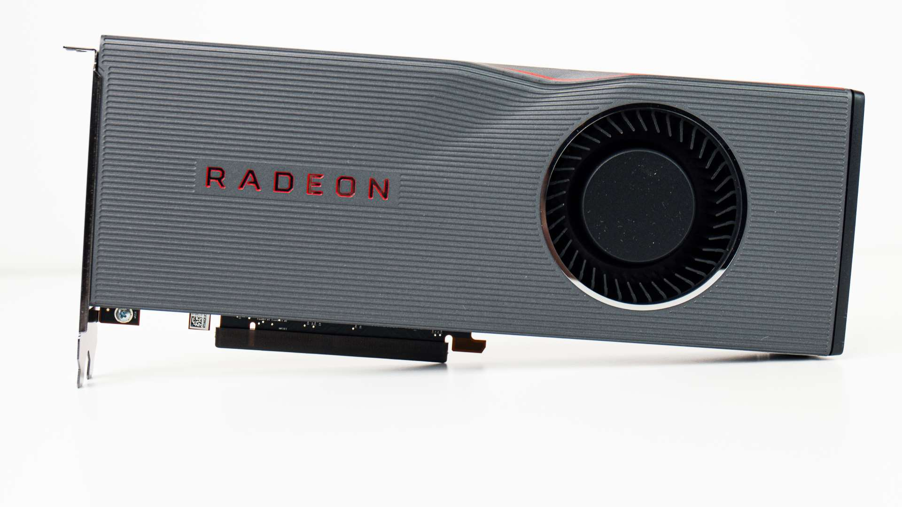

Radeon 5700 & 5700XT Launch Coverage & Testing
July 6, 2019 by Logan

AMD's gaming division is on fire! In a good way!
With the launch of AMD's Navi-based RX 5700 and RX 5700 XT, AMD is signaling a pretty bright future for its graphics division,for desktop and PC gaming. AMD is already well-established in just about all other industries that require high-end graphics: Consoles, Cloud (with Google Stadia), Mobile (via Samsung Partnership) and with Apple, in their laptops, desktop and workstation computers. Even though the 5700 and the 5700XT are not "flagship" graphics cards per se, they are an incredibly important strategically to AMD because they are built on a totally new microarchitecture
– RDNA.
As this is a new microarchitecture, there is a lot here beyond just game performance. We've enlisted the help of EposVox to help us with some of the computing, rendering and streaming tests. (Quite frankly, our results didn't make any sense; we were certain we were doing something wrong. Keep reading to learn more.)
We, of course, put these cards up against the MSI GamingZ RTX 2070 Twin Frozr 7; which is a beastly card and clocks like a champ. A few of our tests also compare against the MSI RTX 2060.
These new cards from AMD are approximately in the same price class, but priced a little better. Nvidia also fired back – launching the new Super series graphics cards. AMD reacted quickly and tweaked the Navi launch prices a bit, which sweetened the deal even a bit further.
We are reviewing the AMD launch-version 5700 and 5700 XT, graciously supplied by AMD; thanks AMD!